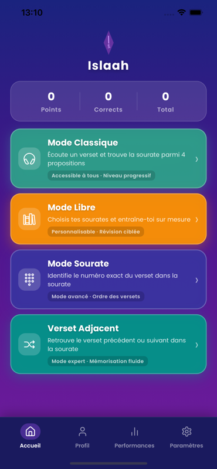
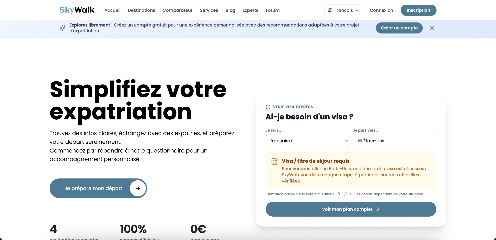

Mon site,
mesuré.
Je l'ai construit comme je construirais le tien : rapide, lisible, facile à trouver.

97
Performance mobile · Lighthouse
Accessibilité100
SEO100
Arphan Drame
Je l'ai construit comme je construirais le tien : rapide, lisible, facile à trouver.
ISLAAH, une appli pour tester sa connaissance du Coran. Pensée, dessinée et développée seul.

Une plateforme pour préparer son expatriation. Un projet personnel, mené sur toute la chaîne.

Site, appli ou solution web : un premier échange pour poser ton projet à plat. Sans engagement.
Pas encore de site ? Pas grave, on part de ton idée.
Tu m'expliques ton idée, je te dis ce qui est faisable et comment.
Tu vois ton projet avant qu'il existe, et tu valides.
Du sur-mesure, pensé pour ton activité.
Ton projet est en ligne, prêt à servir.
Mes tarifs sont affichés :
Arphan Drame, développeur web freelance. Sites, applis, solutions web sur mesure.